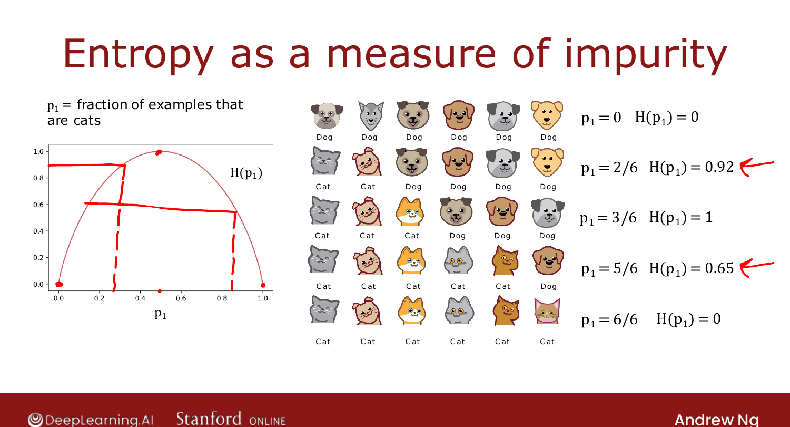
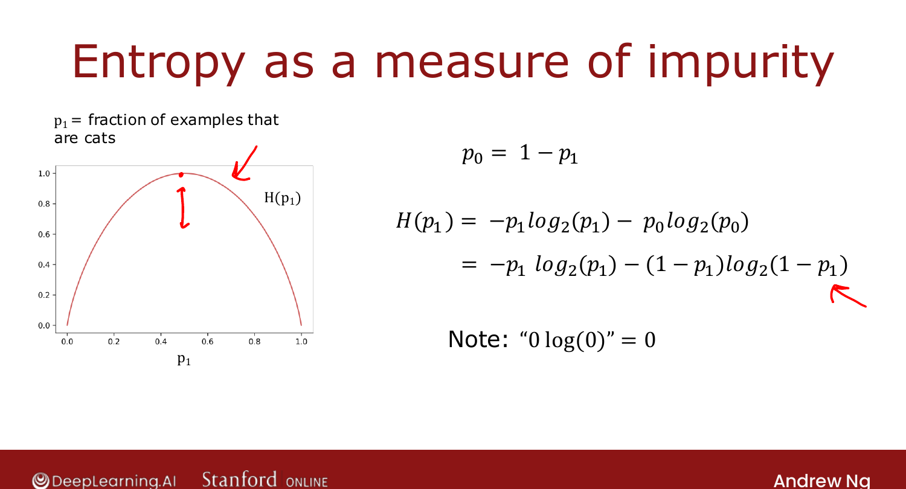

Measuring Purity¶
Course 2 · Week 4 · AI-generated study aid — not authoritative; trust the lecture & cited sources.
To choose splits by purity, you need to quantify it. The tool is entropy — a measure
of impurity. [00:02]
Entropy¶
Let \(p_1\) = the fraction of examples that are cats (label 1). Entropy \(H(p_1)\) is a curve
that is 0 when the set is all one class (pure) and 1 at a 50/50 mix (most
impure): [01:01]
- 3 cats / 3 dogs → \(p_1 = 0.5\) → \(H = 1\) (maximally impure).
- 5 cats / 1 dog → \(p_1 \approx 0.83\) → \(H \approx 0.65\).
- 6 cats / 0 dogs → \(p_1 = 1\) → \(H = 0\) (pure).
- 2 cats / 4 dogs → \(p_1 \approx 0.33\) → \(H \approx 0.92\).

Official C2 slide — entropy as a measure of impurity (DeepLearning.AI / Stanford).The formula¶
With \(p_0 = 1 - p_1\) (fraction of non-cats):
We use \(\log_2\) so the peak is a clean 1 (natural log just rescales it). Convention:
\(0\log 0 = 0\), so \(H = 0\) at \(p_1 = 0\) or \(1\). [05:00]

Official C2 slide — the entropy equation (DeepLearning.AI / Stanford).(This looks like the logistic loss from Course 1 — there's a real mathematical reason, but
you don't need it here.) Open-source libraries sometimes use the similar Gini criterion
instead; entropy works fine for most applications. Next: using entropy to choose a
split. [07:27]
Try it in the browser¶
Try it — implement the entropy H(p₁) — edit the code, then hit Validate for instant ✓/✗ (runs real Python via Pyodide, no setup):
# Tests(case insensitive)(Ctrl+I)
(Alt+: / Ctrl to reverse the columns)
(Esc)